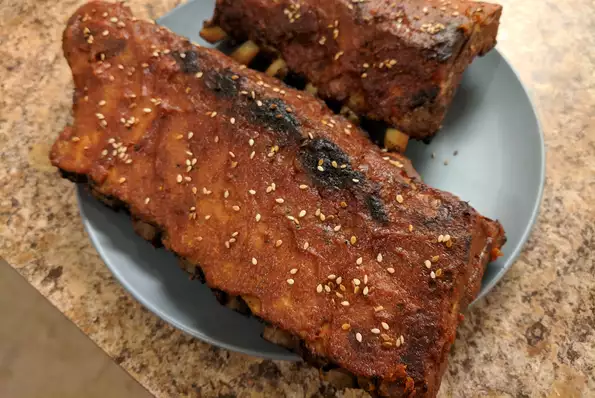

Spicy Korean Lamp Chops

Description
These grilled lamb chops are easy! Made with a tasty lamb
chop marinade that can also be used on steak
Ingrediants
- 1 onion, thinly sliced
- ¼ cup distilled white vinegar
- 2 tablespoons olive oil
- 1 tablespoon minced garlic
- 2 teaspoons salt
- ½ teaspoons salt
- 6 (6 ounce) lamb chops
Steps
- Mix together onion, vinegar, oil, garlic,
salt, and pepper in a large resealable bag.
Add lamb, seal bag, and toss to coat.
Marinate in the refrigerator for 2 hours.
- Preheat an outdoor grill for medium-high heat.
- Remove lamb from marinade and leave any onions
on that stick to meat; discard marinade. Wrap exposed
ends of bones with aluminum foil to keep them from burning.
- Cook on the preheated grill to desired doneness,
about 3 minutes per side for medium. (The chops
may also be broiled in the oven
for about 5 minutes per side for medium.)